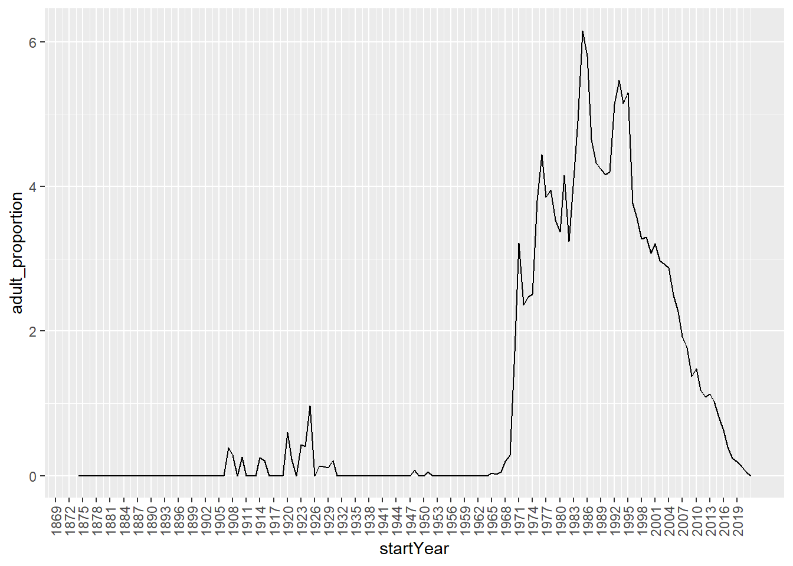
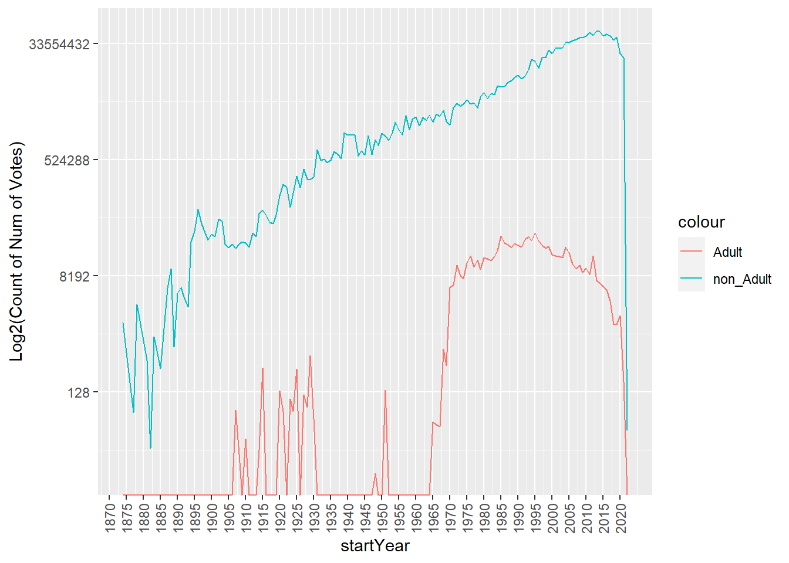
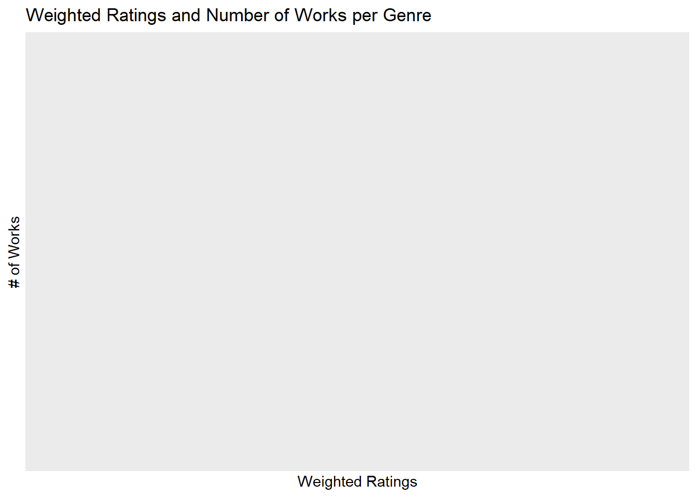
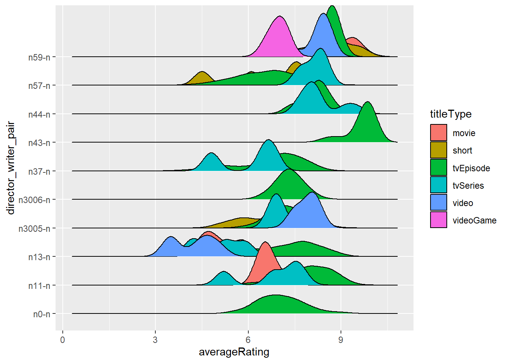
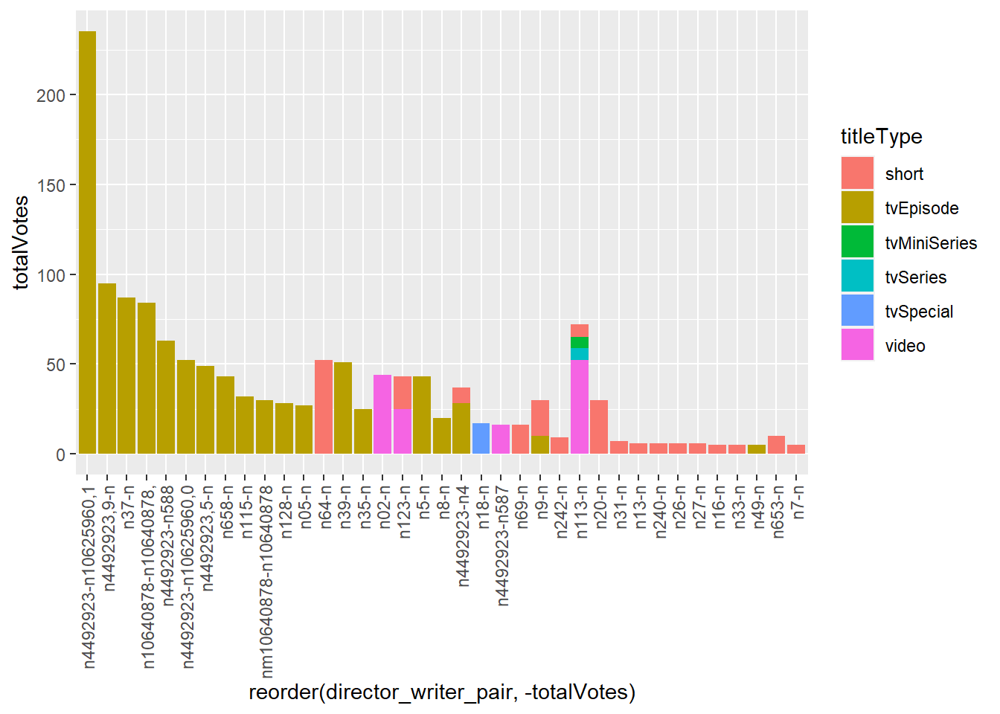

Chapter 5 Results
5.1 Initial Exploration:
5.2 Question 1 - Adult works

1. The graph above shows an interesting trend on the proportion of titles that were released and were adult with increasing year. In the late 1800s it was observed that no adult titles were released at all.
2. However, the trend changed in the early 1900s where the number of releases for adult titles started increasing. There were a few rising spikes observed in some of the years between 1905 to 1930; at for example, 1907, 1909, 1914, 1920, and 1924. The highest proportion achieved in the early 1900s was peaked at 1% of the total movie releases of the year 1924.
3. Further, this unstable rise in the proportion of releases of adult titles started declining constantly and immediately became 0% for year between 1930 and 1947. After a few very less proportionate spikes until 1968, the proportion of releases started increasing linearly till 1971 and peaked at ~3.3% in 1971.
4. After 1971, there was a considerable increased proportion of adult title releases in the late 1900s till 1995. However, this increase was quite abrupt as, that is, after decreasing for a year, the trend was witnessed to increase again and reach a new peak at ~4.5% in 1976. Next, after decreasing again for a few years till 1982, it again saw a significant increase till 1984 and reached its maximum peak over the given years at around 6.5%
5. Ultimately, the trend was cumulatively observed to decrease at approximately 0% in 2020.
The results overall demonstrates that with progressing years, the proportio of adult movies increased though abruptly.

We have plotted the above graph to comparatively study the proportion of votes received by non adult and adult titles over the given period of time in the dataset.
Note that we have used the log() function to calculate and represent the number(proportion) of votes for adult and non adult titles. It is because both of the titles has received number of votes in very separate ranges. Thus, to scale them in a visualizable range we used the log function.
1. The trend for the number of votes received by the adult titles is observed clearly to be similar to the trend observed in the proportion of adult title releases over the same given period of time. That is, adult titles experienced abrupt rises in the number of votes in the early 1900s as compared to 0 number of votes in the late 1800s. In the early 1900s, the number of votes peaked at ~2150 in 1929.
2. Further, it experienced a considerable decrease in the number of votes it received to 0 till 1950 and rised till 128 in 1950.
3. Eventually, the number of votes that adult titles received started increasing very significantly and reached a peak at ~138,000 in 1995. After that, the trend was of a decreasing one till 2020.
4. Contrary to the adult titles, the non adult titles witnessed a clear cumulative increasing trend on the number of votes it received over the given period of time from 1875 till 2020. This linear increase was quite abrupt experiencing minimal declines in the number of votes over the years, however, the overall trend for the number of votes received by non adult titles was increasing.
5.The non adult titles touched a minimum number of votes in 1881 with only 64 number of votes but it was still more than the proportion of votes received by adult titles which was 0. Moreover, it is noteworthy that no adult titles were released around that period.
6. The non adult movies experienced a peak at ~33554432 proportion of votes in 2011 compared to only ~8192 proportion of votes for adult titles.
7. Moreover, the general trend studied for the weighted average rating distribution of adult titles versus non adult titles can interpreted as one where the proportion of votes for non adult titles was always more than the proportion of votes received by adult titles in any given year.
5.3 Question 2 - How does average ratings per number of votes vary for differnt genres?

-cleveland dot plot

From above: - Many of the the highest ratings are of the Drama genre
Looking at just the Drama genre
- parcoord
- highest ratings is mostly tvEpisode
5.4 Question 4 - Director writer pair - ridgeplot

We have ploted the above graph to visualize the averageRating distribution of top 10 director_writer_pairs based on the number of times they worked together.
1. We have filled the ridge plot with the titleType to get the bifurcation of averageRating based on titleType.
2. As we can see from the above graph, the pair “n43-n” has the highest mean of averageRating which is approximately 9.5 ratings that too for tvEpisodes. Moreover, the standard deviation of the averageRating is also less compared to other director writer pairs.
3. For titleType movie we can see the pair “n59-n” has the highest mean of the averageRating.
4. For the titeType short, there are few pairs that have worked upon the short movie, from the graph we can see that the pair “n59-n” has averageRating spread till 9.8 approximately while the averageRating for the tittleType short has the mean of averageRating around 6 to 7 ratings.
5. For the titleType tvSeries there are 6 pairs that have worked for that particular titleType. Out of all the pairs, the pair “n57-n” and “n44-n” seem to have a high distribution of averageRating but the pair “n44-n” seems to be more successful for tvSeries compared to “n57-n” as the data is spreaded till 9.5 averageRatings.
6. For the titleType video there are 3 pairs in total that have worked on it. Out of all the pairs, the pair “n59-n” and “n30-n” seem to have similar distribution of averageRating where the pair “n59-n” being on the higher side.

We have plotted the above graph to visualize the top 10 director writer pair having averageRating equal to 10.
1. For the titleType short we can see clearly that the pair “n336-n” has the highest number of votes in the averageRating equal to 10. Although, all the pairs have received the averageRating 10 but the most likely pair for the titleType short is “n336-n” and then followed by “n64-n”.
2. For the titleType tvEpisode we can see that there are plenty of pairs that have worked together for a tvEpisode. Out of all the pairs, we observe that “n37-n” has the highest number of votes , approximately 87.5 votes. Moreover, the pair “n10640878-n10640878” also seem to have similar likening between the audience.
3. For the titleType tvMiniSeries there are hardly pairs of director writer that have worked together except for 1 that is the pair “n113-n”.
4. Interestingly, for titleType tvSeries we can only see one pair that is “n113-n”. The reason for this might be either there are very few tvSeries that have averageRating equal to 10 or else less director writer pair have made tvSeries compared to other titleTypes.
5. Similarly for the titleType tvShort there is only 1 pair that has worked together to make a tvShort and that pair is “n336-n”.
6. titleType tvSpecial also has only 1 pair of director writers that have worked together. The pair “n18-n” is the pair that has approximately 20 numbers of Votes.
7. For the titleType video there are a few pairs of director_writer that have worked together. Amongst all the pairs, the pair “n3195-n” has the highest number of Votes which is approximately 100.
In Conclusion, for the titleTypes of tvMiniSeries, tvSeries, tvShort and tvSpecial there are only 1 pair of director_writer who have an averageRating of 10 and have worked together for more than 5 times. The titleTypes short, tvEpisodes, and video have many director_writer_pairs that have averageRating 10 and have worked for more than 5 times together. Surprisingly the above plot does not have any pairs that have worked together for the titleType movies, this suggests that there could be two scenarios for this: first there would be pairs that have averageRating of 10 but the pair might have worked for only once or twice or second there could be no movies that have averageRating of 10.